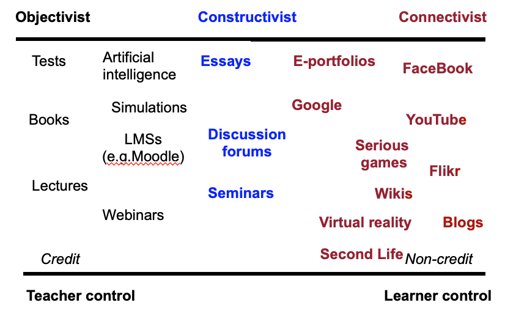

8.8 A framework for analysing the pedagogical characteristics of educational media



8.8.1 Brief summary of pedagogical differences in media
I will now summarise the unique pedagogical characteristics of the different media discussed in this chapter.
Figure 8.8.1 presents a diagrammatic analysis of various learning media. I have arranged them primarily by where they fit along an epistemological continuum of objectivist (black), constructivist (blue) and connectivist (red), but also I have used two other dimensions, teacher control/learner control, and credit/non-credit. Note that this figure also enables traditional teaching modes, such as lectures and seminars, to be included and compared. Figure 8.8.1 represents my personal interpretation of these media, and other teachers or instructors may well re-arrange the diagram differently, depending on their particular applications of these tools.
Not all tools or media are represented here (for example, audio and video or MOOCs). The position of any particular tool in the diagram will depend on its actual use. Learning management systems can be used in a constructivist way, and blogs can be very teacher-controlled, if the teacher is the only one permitted to use a blog on a course. Badia et al (2011) have shown that educational design and the situational use of technology very much influence whether specific affordances or unique characteristics of a medium are successfully exploited. Student preferences or pre-dispositions can inhibit or support the successful implementation of specific affordances of different media (for instance, computer science students’ preferences for adaptive learning rather than the communication and discussion affordances of ICT – Arenas, 2015).
However, the aim here is not to provide a cast-iron categorization of the affordances of different educational media, but to provide a framework for teachers in deciding which tools and media are most likely to suit a particular teaching approach. Indeed, other teachers may prefer a different set of pedagogical values as a framework for analysis of the different media and technologies.
However, to give an example from Figure 8.8.1, a teacher may use an LMS to organize a set of resources, guidelines, procedures and deadlines for students, who then may use several of the social media, such as photos from mobile phones to collect data. The teacher provides a space and structure on the LMS for students’ learning materials in the form of an e-portfolio, to which students can load their work. Students in small groups can use discussion forums or FaceBook to work on projects together.
The example above is in the framework of a course for credit, but the framework would also fit the non-institutional or informal approach to the use of social media for learning, with a focus on tools such as FaceBook, blogs and YouTube. These applications would be much more learner driven, with the learner deciding on the tools and their uses. The most powerful examples are connectivist or cMOOCs, as we saw in Chapter 5.
8.8.2 Key takeaways
Chapter 8: Key Takeaways
There is a very wide range of media available for teaching and learning. In particular:
- text, audio, video, computing, social media and emerging technologies all have unique characteristics that make them useful for teaching and learning;
- the choice or combination of media will need to be determined by:
- the overall teaching philosophy behind the teaching;
- the presentational and structural requirements of the subject matter or content;
- the skills that need to be developed in learners;
- and not least by the imagination of the teacher or instructor (and increasingly learners themselves) in identifying possible roles for different media;
- learners now have powerful tools through social media for creating their own learning materials or for demonstrating their knowledge;
- courses can be structured around individual students’ interests, allowing them to seek appropriate content and resources to support the development of negotiated competencies or learning outcomes;.
- content is now increasingly open and freely available over the Internet; as a result learners can seek, use and apply information beyond the bounds of what a professor or teacher may dictate;
- students can create their own online personal learning environments;
- many students will still need a structured approach that guides their learning;
- teacher presence and guidance is likely to be necessary to ensure high quality learning via social media;
- teachers need to find the middle ground between complete learner freedom and over-direction to enable learners to develop the key skills needed in a digital age.
References
Arenas, E. (2015) Affordances of Learning Technologies in Higher Education Multicultural Environments The Electronic Journal of e-Learning Volume 13 No. 4 (pp 217-227)
Badia, A., Barberà, E., Guasch, T., Espasa, A. (2011). Technology educational affordance: Bridging the gap between patterns of interaction and technology usage in: Digital Education Review, Vol.19, pp 20-35
Bates, A. (2011) Understanding Web 2.0 and its implications for e-learning, in Lee, M. and McCoughlin, C. (eds.) Web 2.0-based E-learning: applying social informatics for tertiary teaching Hershey PA: Information Science
Activity 8.8 Choosing media for a teaching module
- Take a module or main topic of a course you are teaching. Identify the key learning outcomes, in terms of skills to be taught, then the content area to be covered.
- Then look through the key characteristics of each of the media in this chapter, and think how each medium might be used to teach your module. Use your analysis from Activities 8.2 to 8.7 Make a list of the functions you have chosen and their relationship to content and skills in the module.
- Using Figure 8.8.1, allocate a range of tools and media that you might consider using and place them on the continuum.
- Are you still happy with your choice?
Don’t worry – we haven’t finished yet. The next chapter will provide a way to make decisions on a more realistic basis. The main purpose here is to get you thinking about possible uses of different media in your subject area.
There is no feedback offered for this activity. Chapter 9 should give some guidance as to the appropriateness of your answers.